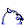

#086
Seel
Water
The protruding horn on its head is very hard. It is used for bashing through thick ice
Base stats Total 290
HP65
Attack45
Defense55
Speed55
Special70
Details
- Species
- Sea Lion
- Height
- 3'07"
- Weight
- 198.0 lb
- Catch rate
- 190
- Base exp
- 100
- Growth
- Medium Fast
Level-up moves
LevelMoveType
StartHeadbuttNormal
Lv 5GrowlNormal
Lv 8Water GunWater
Lv 26Aurora BeamIce
Lv 27WaterfallWater
Lv 34Ice BeamIce
Lv 38SurfWater
Lv 41Take DownNormal
Lv 44Hydro PumpWater
Evolution
Where to find
Any fishable waterOld RodLv 5
TM / HM
TM06 ToxicTM08 Body SlamTM09 Take DownTM10 Double-EdgeTM11 BubblebeamTM12 Water GunTM13 Ice BeamTM14 BlizzardTM20 Pay DayTM31 MimicTM32 Double TeamTM34 BideTM44 RestTM50 SubstituteHM03 SurfHM04 Strength